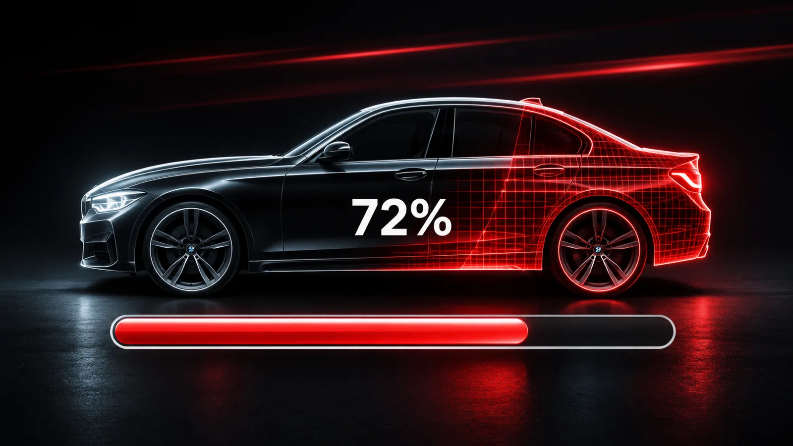

Software update
Vehicle Software Update
Regular software updates of the vehicle’s electronic control units help fix errors, improve system stability, performance and equipment compatibility. Updates can also add new features, improve security and eliminate known software faults.
Keeping the software up to date helps maintain your car in its current technical condition.